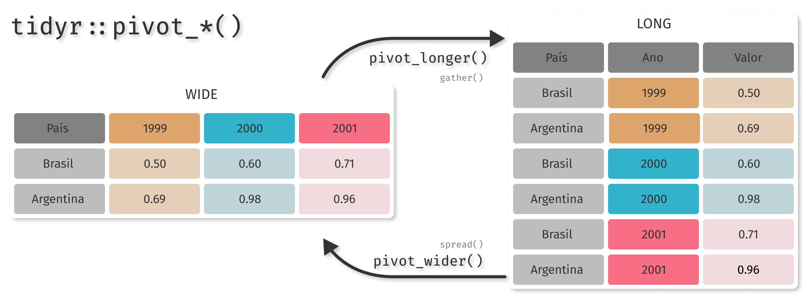

lucas carmo
blog
Sobre
apresentações
apresentações

Aula 3 - Manipulando dataframes e gráficos
Lucas C. L. do Carmo
05 - 10 - 2020
Aula 2 - Funções e Manipulação de Objetos
Lucas C. L. do Carmo
30 - 09 - 2020
Aula 1 - Instalação e introdução ao R
Lucas C. L. do Carmo
22 - 09 - 2020
Sem matches